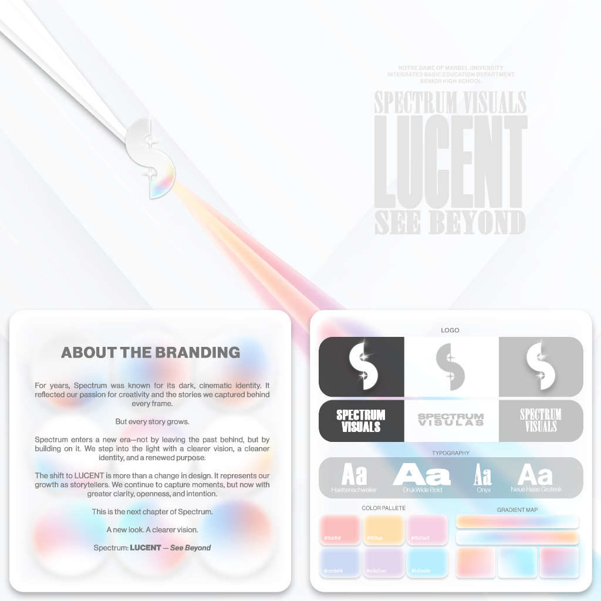
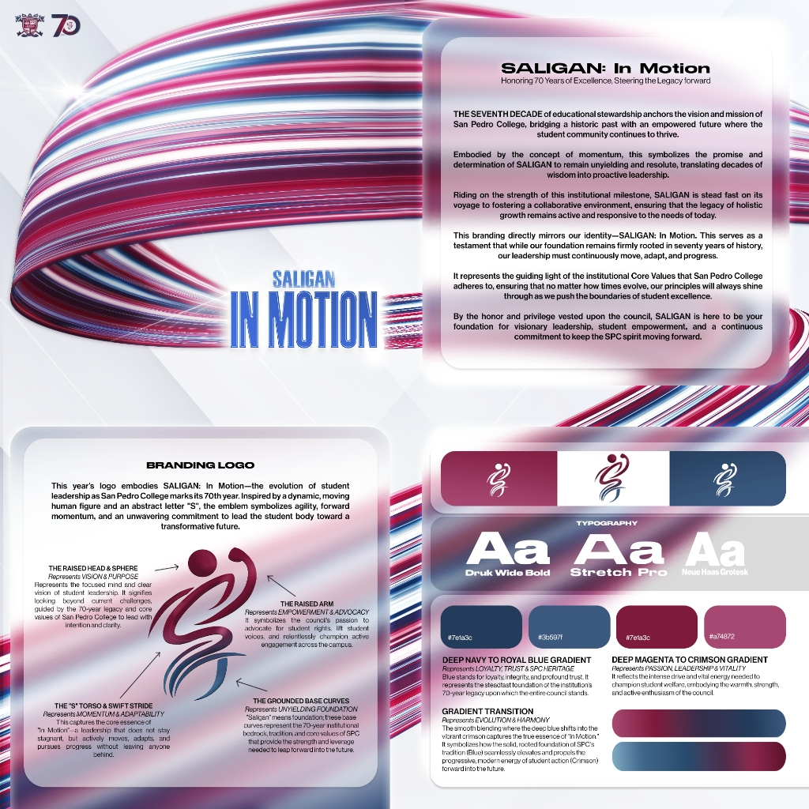
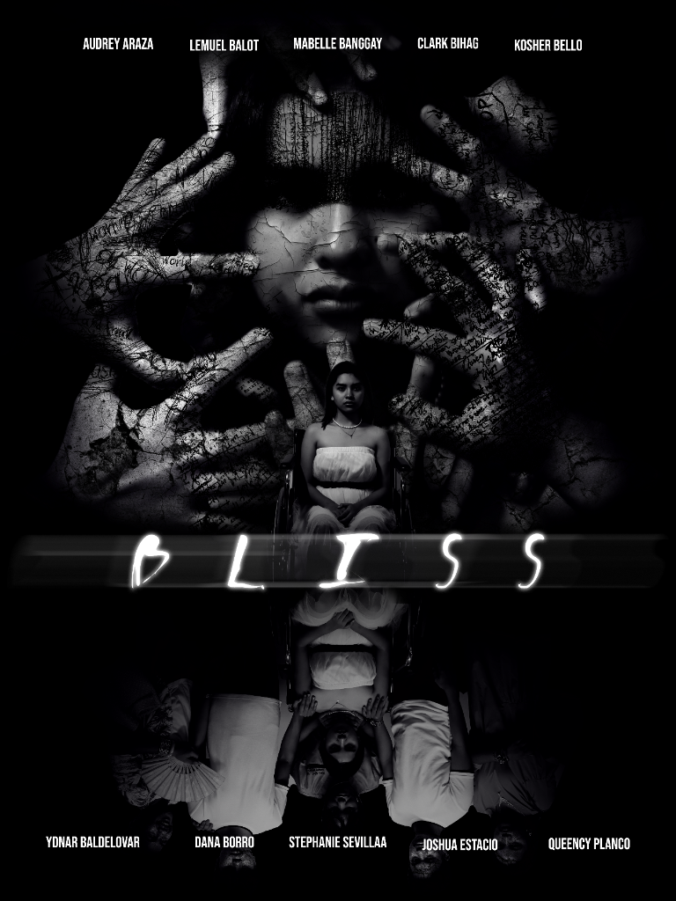
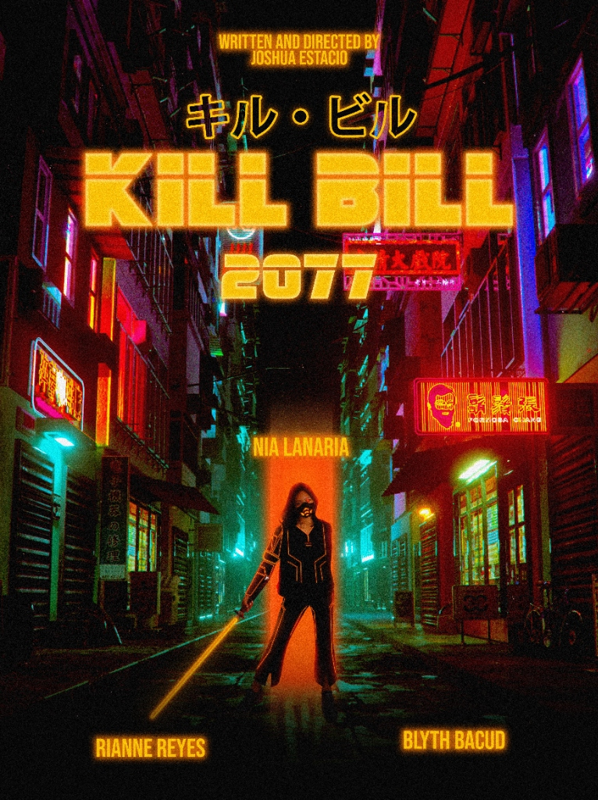
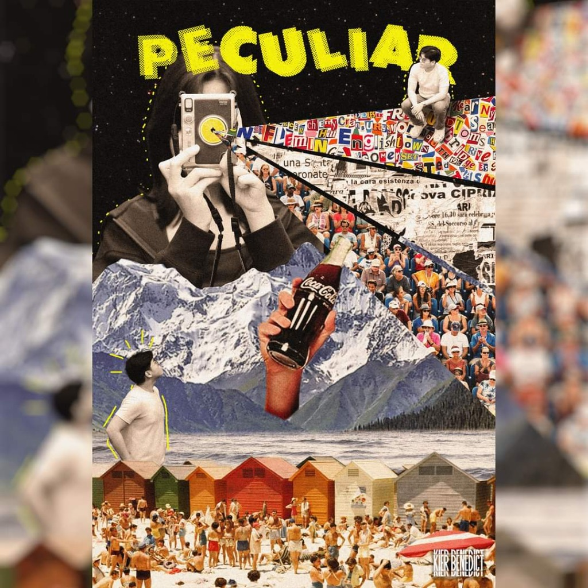
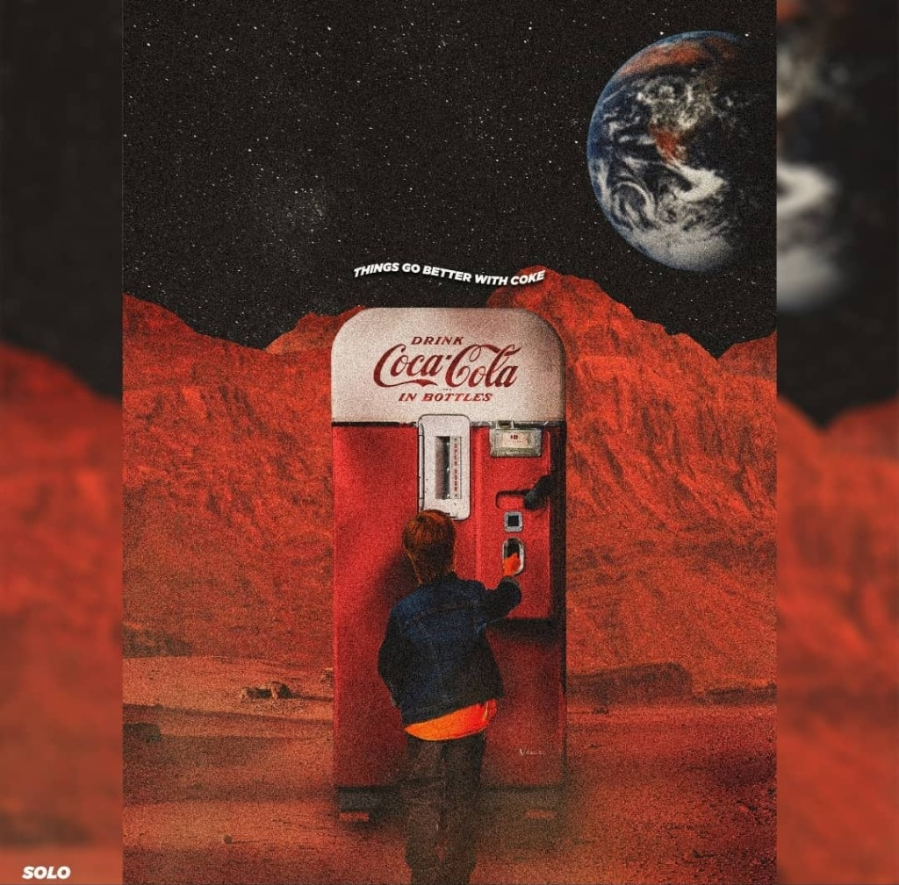
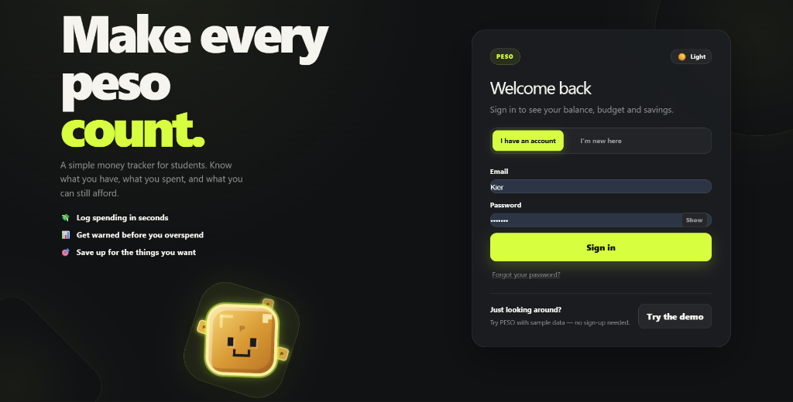
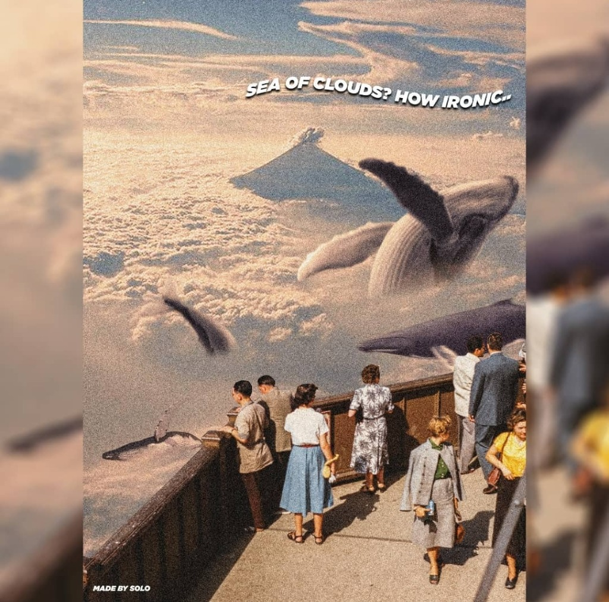
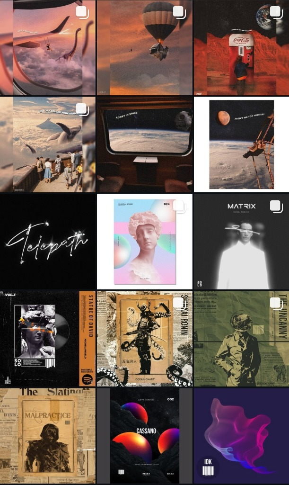

PAUNAHAI: Game On! All Night
Cosmic event key visual and promotional poster featuring constellation cartography, glowing mountain ascents, and celestial typography.
Typography, posters, and branding systems built with clear visual direction.
Cosmic event key visual and promotional poster featuring constellation cartography, glowing mountain ascents, and celestial typography.

Luminous brand identity manual pairing prismatic chrome monograms, glassmorphic UI cards, and clean editorial typography.

Institutional visual identity and logo anatomy engineered for San Pedro College's 70th anniversary, expressing momentum and advocacy.

Chilling psychological thriller one-sheet featuring cracked portraiture, tactile handwritten scribbles, and mirrored reflections.

Retro-futuristic concept key art blending rain-drenched cyberpunk alleyways, neon katana energy glow, and Japanese sci-fi typography.

Vintage mixed-media poster fusing camera flash typography beams, newsprint clippings, alpine peaks, and coastal crowds.

Surreal retro-space collage depicting a classic vintage vending machine on the red plains of Mars beneath an Earth-rise.

Dark-mode fintech web app interface featuring high-contrast neon accents, student budget telemetry, and an 8-bit mascot.

Vintage dreamscape collage of observation deck sightseers watching giant humpback whales breach across a sea of cumulus clouds.

Curated 15-piece design archive featuring album art direction, Japanese woodblock posters, cyberpunk key art, and surreal collages.